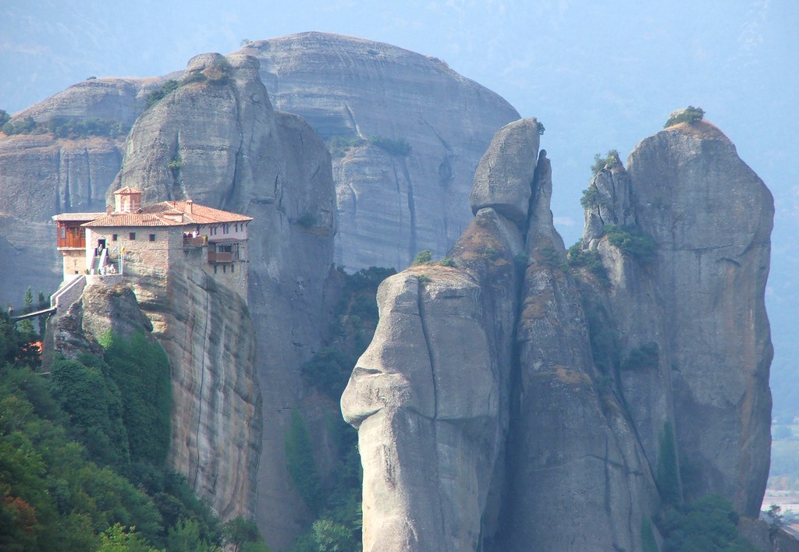

Τα Μετέωρα βρίσκονται στο γεωγραφικό διαμέρισμα της Θεσσαλίας. Αποτελούν επιβλητικούς βράχους πάνω στους οποίους έχουν χτιστεί μοναστήρια. Η θέα τόσο όσο όταν βλέπεις τους βράχους από κάτω αλλά τόσο και όταν βλέπεις τη θέα κάτω πάνω στους βράχους είναι μαγευτική.
